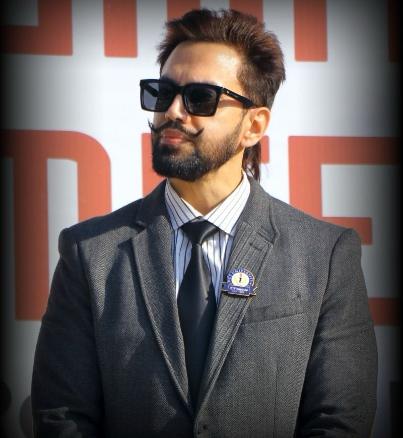
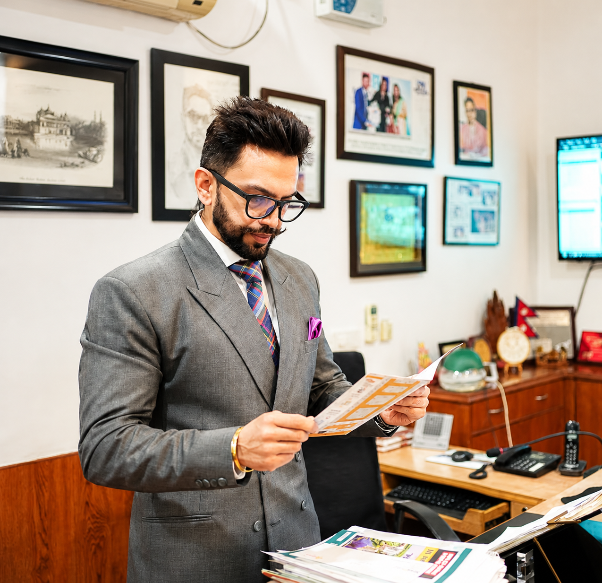
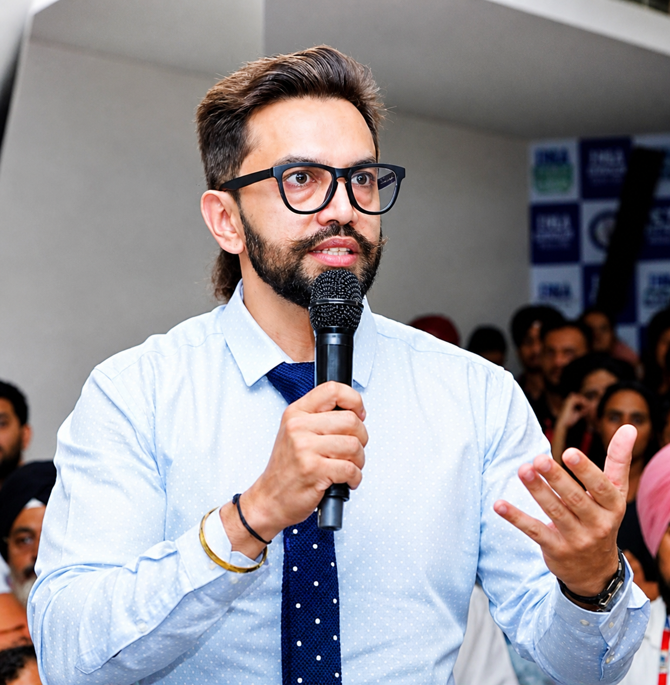
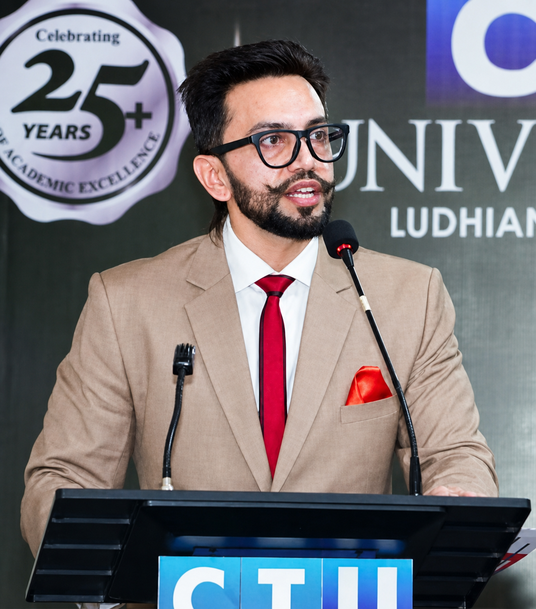
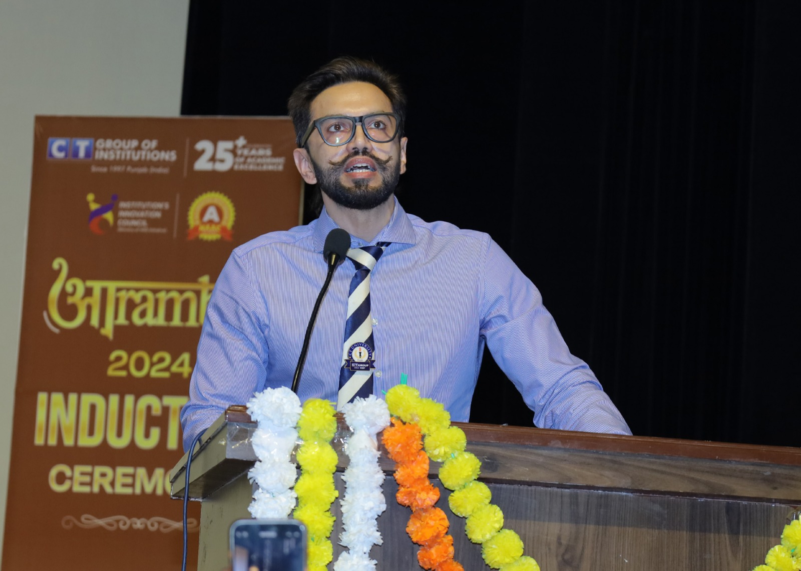

There are those who speak of discipline, and those who live it. Dr. Manbir Singh is the latter. He is the first to arrive, never delegates his presence, and treats punctuality not as a professional habit, but as a moral imperative: your time matters, and my word is my bond.
He leads by walking alongside, not ahead. Regardless of the individual, he possesses the rare gift of total presence, making everyone feel like the only person in the room. He remains unimpressed by titles, valuing character above all else; he is a professional to the core who believes in being a leader rather than a boss.
He is a man of his word—unwilling to be one who says one thing and does another. His handshake is a contract, and his promises are simply outcomes in the making. His open-mindedness stems from a place of deep security; he does not need to be the smartest in the room, only the most curious. He changes his mind when evidence demands it, proving that he is guided by truth rather than ego.
This philosophy is rooted in a pivotal choice: a young man in his prime, with a lucrative job offer and a promising life abroad, who chose to stay in India to contribute to society by promoting quality education. A graduate of Middlesex University, London, and holder of a PhD in Management, he is a self-motivated, result-oriented person with the zeal to expand horizons.
Underlying it all is the quiet shadow of his father and mentor, S. Charanjit Singh Channi. Following in his footsteps, Dr. Singh entered the field of education in 2004, guided by the belief that “the only way out of difficulty is through it”.
Today, he serves as the Pro-Chancellor of CT University and Managing Director of CT Group of Institutions, managing 17 institutes, one university, and two international-level schools. He remains ardent about the education of youth, whom he considers the future of the global community.

Educational institutions should not exist merely to issue degrees. Their true purpose is to awaken minds, shape character, and prepare responsible citizens. They are spaces where discipline, values, and vision come together to define a nation’s future. Having observed education systems and societies across countries like the UK, Egypt, and Japan, each experience offered distinct lessons rooted in history, culture, and people’s values. China, however, stands apart—not just for what it has built, but for the clarity with which it thinks, plans, and executes. One of the most striking aspects of engaging with China’s academic and policy ecosystem was witnessing how education is treated as a national mission rather than a standalone sector. Global dialogues on inclusive education, integration-driven learning, and technology-enabled classrooms revealed a mindset that values scale, collaboration, and long-term impact. It prompts an important reflection for India. We have immense talent, creativity, and demographic strength, yet we often hesitate to think boldly and act decisively. Global platforms for knowledge exchange are no longer optional—they are essential if India is to shape future narratives rather than follow them.
China’s story, however, extends far beyond classrooms.
Here, technology is not showcased for symbolism—it is deployed for results. Artificial Intelligence powers factories, healthcare systems, transport networks, and smart cities. Robotics and automation are not future aspirations; they are present realities driving productivity and efficiency. What stands out most is the deep alignment between government, industry, and academia. Universities do not operate in silos. They produce industry-ready talent, while industries feed real-world challenges back into research and curriculum design, creating a continuous cycle of innovation. China’s leadership in drones, advanced manufacturing, 3D printing, and digital infrastructure reflects long-term planning rather than short-term ambition. Nationwide 5G connectivity, robust networking systems, and massive data infrastructure form the invisible backbone of this growth.

By 2026, the Indian higher education narrative has shifted dramatically. For decades, the primary promise of a university degree was employability—securing a stable role in a recognised firm. Today, however, a new and more dynamic idea has taken centre stage: the university not as a finishing school for employees, but as a launchpad for employers.
This paradigm shift, often termed the "Incubation Revolution," moves beyond the standard conversation about upskilling and AI literacy. While technical skills remain vital, the application of these skills has changed. In 2026, progressive universities are functioning less like academic institutions and more like pre-seed startup accelerators.
The catalyst for this change is the deepening impact of the National Education Policy (NEP) 2020, which has now fully matured. Its "multiple entry and exit" system has emboldened students to pause their formal degrees to pursue ventures, knowing they can return without penalty. Campuses have replaced traditional lecture halls with co-working spaces and "tinkering labs," where engineering majors collaborate with liberal arts students to build viable products, not just theoretical projects.
Furthermore, the metric of success for top-tier institutions is no longer just "placement rates" but "venture creation." University-backed venture funds and angel networks are now commonplace, providing the initial capital that young entrepreneurs previously had to seek from skeptical external investors. "Pitch Days" have become as culturally significant as graduation ceremonies.
This evolution addresses a critical economic reality: India’s demographic dividend needs more than just jobs; it needs job creators. By embedding entrepreneurship into the DNA of the curriculum—where failing at a startup is viewed as a practical credit rather than an academic loss—universities are fostering a generation of resilient, innovative leaders ready to build the next wave of Indian unicorns.
Furthermore, the metric of success for top-tier institutions is no longer just "placement rates" but "venture creation." University-backed venture funds and angel networks are now commonplace, providing the initial capital that young entrepreneurs previously had to seek from skeptical external investors. "Pitch Days" have become as culturally significant as graduation ceremonies.
This evolution addresses a critical economic reality: India’s demographic dividend needs more than just jobs; it needs job creators. By embedding entrepreneurship into the DNA of the curriculum—where failing at a startup is viewed as a practical credit rather than an academic loss—universities are fostering a generation of resilient, innovative leaders ready to build the next wave of Indian unicorns.
What if the biggest flaw in our education system is that we are preparing students for a world that no longer exists?
For decades, education has followed a predictable pattern—learn, score, graduate, and secure a job. But the world our students are stepping into today is anything but predictable. Roles are evolving faster than ever, industries are transforming overnight, and the very definition of a “career” is constantly being rewritten.
In such a landscape, the question we must ask ourselves is not whether students are learning enough—but whether they are learning the right things.
At CT Group, we believe the focus of education must shift from information to adaptability. Knowledge is no longer scarce; it is available at the click of a button. What truly matters is the ability to think critically, solve problems creatively, and adapt fearlessly to change.
The future does not belong to those who know the most—it belongs to those who can learn, unlearn, and relearn.
This requires a fundamental shift in how we approach education. Classrooms must become spaces of curiosity, not just instruction. Students must be encouraged to question, to experiment, and even to fail—because failure, when guided correctly, is one of the most powerful teachers.
Equally important is the need to move beyond rigid definitions of success. A degree alone can no longer define capability. Skills, mindset, and the ability to navigate uncertainty are what truly set individuals apart.
As educators, our responsibility is not to create job seekers, but to nurture problem solvers, innovators, and leaders. We must prepare students not just for their first job, but for a lifetime of change.
At CT Group, this philosophy drives our efforts to build an ecosystem where learning is dynamic, experiential, and aligned with the realities of the modern world. Because the goal is not just to keep up with the future—but to be ready to shape it.
The world is changing. Education must change faster.

Education today is not limited to classrooms, textbooks, or degrees. It is about building a vibrant community where ideas, innovation, and collaboration come together to shape the future. At CT Group, we firmly believe that institutions truly thrive when the people associated with them grow together as a collective force.
For more than two decades, CT Group has steadily evolved into a dynamic educational ecosystem. What began as a vision to provide quality education has grown into a thriving academic community where students, educators, researchers, and industry professionals work together to create meaningful impact. Our journey has always been guided by a strong belief that growth must be shared and inclusive.
At the heart of CT Group lies a culture that values curiosity, creativity, and collaboration. Our campuses bring together young minds from diverse regions and backgrounds, each carrying unique perspectives and aspirations. This diversity strengthens our academic environment and fosters a culture of mutual learning, where students and faculty inspire one another to explore new ideas and possibilities.
A strong educational institution is built not only on infrastructure or curriculum but on the strength of its people. Faculty members, researchers, and students together create the intellectual energy that drives innovation and progress. At CT Group, we strive to cultivate an atmosphere where talent is encouraged, creativity is nurtured, and ideas are transformed into real-world solutions.
As we continue to grow, our vision remains rooted in inclusivity and opportunity. We warmly welcome bright minds, thinkers, innovators, and researchers who wish to be part of a community that values knowledge and encourages exploration. Every new individual who joins our academic family contributes to the collective strength and vibrancy of our institution.
In a rapidly changing world, collaboration between academia, industry, and society has become more important than ever. CT Group is committed to building strong bridges that connect education with innovation and practical learning. Through research initiatives, industry partnerships, and interdisciplinary dialogue, we aim to create platforms where learning extends beyond traditional boundaries.
Our goal is not only to educate but also to empower individuals who will lead change in their respective fields. When students succeed, the institution succeeds. When faculty innovate, new possibilities emerge. When the community works together, the impact multiplies.
At CT Group, we view growth as a shared journey. We believe that by working together, supporting each other, and welcoming new ideas, we can build an academic community that continues to evolve and inspire generations to come. Our doors remain open to every mind that seeks to learn, contribute, and grow with us.

*Rethinking Societal Pressure in Shaping Young Careers*
In today’s rapidly evolving world, career decisions are increasingly influenced not only by opportunity, but by societal pressure and parental prestige. For many families, a child’s profession is seen as a reflection of status, dignity, and achievement. While ambition is essential, problems arise when prestige becomes the primary motivation behind a career choice.
In today’s rapidly evolving world, career decisions are increasingly influenced not only by opportunity, but by societal pressure and parental prestige. For many families, a child’s profession is seen as a reflection of status, dignity, and achievement. While ambition is essential, problems arise when prestige becomes the primary motivation behind a career choice.
Society often celebrates visible success — high salaries, impressive titles, and socially admired professions. Comparisons at social gatherings and on digital platforms subtly shape expectations. Parents, driven by concern and love, may encourage paths they believe ensure security and honor. However, when these expectations override a child’s natural aptitude, the consequences can be long-lasting.
Every child possesses unique behavioural tendencies. Some are analytical and logical; others are creative, empathetic, athletic, or entrepreneurial. These traits begin emerging early in life and gradually define strengths. Ignoring them in favor of societal validation can lead to dissatisfaction, lack of motivation, and emotional stress.
The real distinction lies between information and wisdom. Information tells us which careers are trending or financially rewarding. Wisdom asks whether that path aligns with the child’s temperament and passion. A profession chosen for approval may bring temporary applause, but a profession chosen for alignment brings sustained fulfillment.
True parental pride should not rest on societal comparison but on a child’s commitment, growth, and integrity. When students are allowed to explore their strengths and make informed choices, they develop resilience and ownership of their journey.
It is time to redefine prestige — not as conformity to societal expectations, but as the courage to nurture individuality. A fulfilled individual contributes more meaningfully to society than one who simply follows a prescribed path.
In a world of constant deadlines and endless to-do lists, it's easy to fall into the trap of working harder without pause. While determination is critical, overexertion without renewal can lead to burnout.
This is where the concept of "Sharpen the Saw," popularized by Stephen R. Covey in The 7 Habits of Highly Effective People, becomes essential.
*What Does "Sharpen the Saw" Mean?*
Picture attempting to cut down a tree with a blunt blade—no matter how hard you try, the task becomes exhausting and inefficient. Taking a break to sharpen the saw might seem counterproductive, but it ensures greater efficiency. Covey emphasizes the importance of self-renewal across four dimensions: physical, mental, emotional/social, and spiritual.
*The Ripple Effect of Sharpening the Saw*
Investing in self-renewal benefits all areas of life. It helps you stay focused, creative, and resilient, ensuring you thrive rather than just survive.
*Practical Steps to Implement*
Schedule "Me Time": Allocate time for recharging activities like workouts or hobbies.
Set Boundaries: Learn to say no to avoid overcommitting and protect self-care time.
Evaluate Regularly: Assess and adjust your routine to maintain balance.
*Conclusion*
"Sharpen the Saw" is a lifelong habit. By prioritizing renewal, you sustain effectiveness and fulfilment. Remember, the sharper the saw, the easier and more rewarding the journey becomes. Take time to sharpen your saw—you’re worth it.